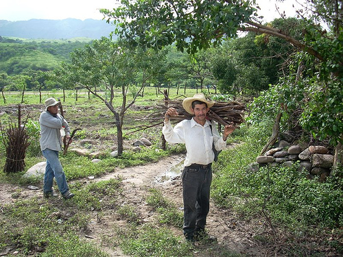
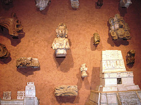
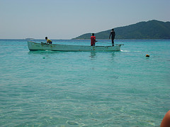

Honduras: La economía y el turismo
La producción hondureña 
Algunos organismos internacionales afirman que en Honduras existe pobreza extrema, pero la realidad es muy diferente a la pobreza. Los hondureños viven en un territorio lleno de riquezas donde hay mucha producción agrícola, ganadera, pesquera y minera. Esto riqueza se debe a las abundantes tierras llenas de minerales, a los dos océanos que rodean al país y a los muchos ríos que bañan todos las provincias. Además en lugares donde no hay ríos cercanos hay aguas subterráneas a poca profundidad de donde se puede obtener agua potable si se hacen pozos.
Honduras no es un país únicamente de plantaciones bananeras o meloneras, tampoco es un país que sobrevive del turismo. Las plantaciones y el turismo representan el 5% de lo que produce Honduras. Anualmente produce cerca de 25 mil de millones de dólares en productos en todo el país.
Las personas que habitan en las áreas rurales son muy trabajadoras el único problema es que los terratenientes normalmente no les pagan un buen salario a los agricultores y por eso muchos de ellos migran a las ciudades. El gran dilema es que la tierra está concentrada en pocas manos y muchas de estas tierras no se utilizan. Esta es la principal razón de no tener suficiente producción para abaratar más los productos del campo.
Además los campesinos migran del campo a la ciudad y esto generó la pobreza urbana y raramente la riqueza del campo. Lamentablemente la riqueza se concentra en pocas manos debido al bajo salario mínimo y a la poca creación de nuevas empresas.
La meta del turismo
El objetivo del Ministerio de Turismo de Honduras es cambiar al país en uno de los centros turísticos más importantes de la región para el año 2021. Para lograr esa meta, este ministerio intenta desarrollar y diversificar sus mercados, productos, y destinos. De esta manera las empresas, según las autoridades del ministerio, van a ser más competitivas en los ámbitos nacional e internacional.
La naturaleza tropical como un primer mundo en Honduras
La República de Honduras es el país de los tres mundos. Su primer mundo es el de la naturaleza tropical, ya que Honduras tiene una increíble diversidad natural por la cual Centroamérica es reconocida. Los sectores más altos se encuentran rodeados del bosque lluvioso, denominado “Bosque Lacrimoso” por las constantes gotas que produce la espesa niebla siempre presente. Las costas del Sur y el Norte, se encuentran rodeadas de lagos y lagunas costeras dueñas de una belleza particular. Este lugar es conocido como la “Costa del Mosquito” que forma parte de la zona del bosque lluvioso más grande e intacto al norte de Sudamérica. A este lugar se puede acceder únicamente por aire o por pequeños barcos.
Las minas
El Rosario es el nombre de un pueblo minero abandonado y está localizado justo bajo la zona nuclear del parque Nacional La Tigra. Hablando de pueblos mineros hay que mencionar que durante los últimos 5 años, las mineras estadounidenses han generado ingresos de 9920 millones de lempiras (524 millones de dólares) explorando el territorio hondureño. Únicamente pagaron 618,4 millones de lempiras (32 millones de dólares), esto solamente es el 16%. Es decir que Estados Unidos ha ganado de estas mineras el 85% del total generado. Desgraciadamente Honduras no se ha beneficiado de estas mineras porque han causado gran deforestación, sequía de los ríos, contaminación de los ríos, menos agua y menor potencial hidroeléctrico.
El mundo maya como segundo mundo
El Segundo Mundo es el maya. En el mundo de la arqueología Copán ha sido llamada la Atenas del Nuevo Mundo, dueña de la más elaborada escultura en piedra, Copán es intensamente estudiada además de ser el sitio arqueológico maya mejor conservado. Las Ruinas de Copán, es quizás la mayor fuente de información referente a la antigua civilización maya. Ha sido declarada como Patrimonio de la Humanidad en 1980 por la UNESCO.
Hoy, las Ruinas de Copán ofrecen excelentes instalaciones, comida típica y tours organizados, tiene distintas actividades como paseos a caballo, observación de aves, visitas a reservas ecológicas, fincas de tabaco y aldeas chortíes, es decir, pueblos amerindios de la familia maya. El aumento en el turismo ha estimulado la construcción de hoteles y restaurantes, manteniendo la estética colonial.
El mar caribeño como tercer mundo 
El tercer y más exótico mundo, es el Mundo Caribeño de Honduras. Que nace en la Costa Norte a inicios del siglo pasado, cuando estadounidenses hicieron un plan que después se convirtió en una industria multimillonaria. Por esta industria se conoce a Honduras como la “República Bananera”. Pueblos del litoral como Puerto Cortés, Tela, La Ceiba y Trujillo fueron algunos lugares de la época de riqueza en las compañías bananeras. Sin embargo hoy día esa riqueza es poca.